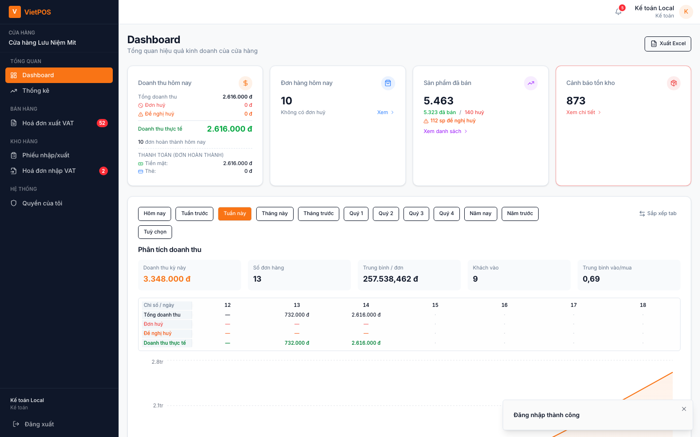
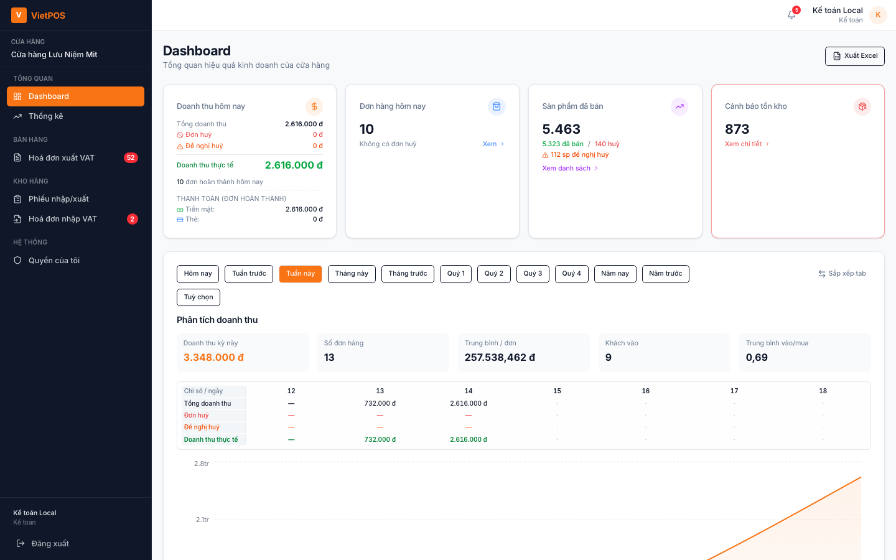
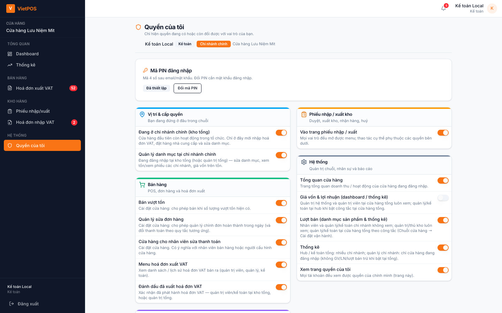
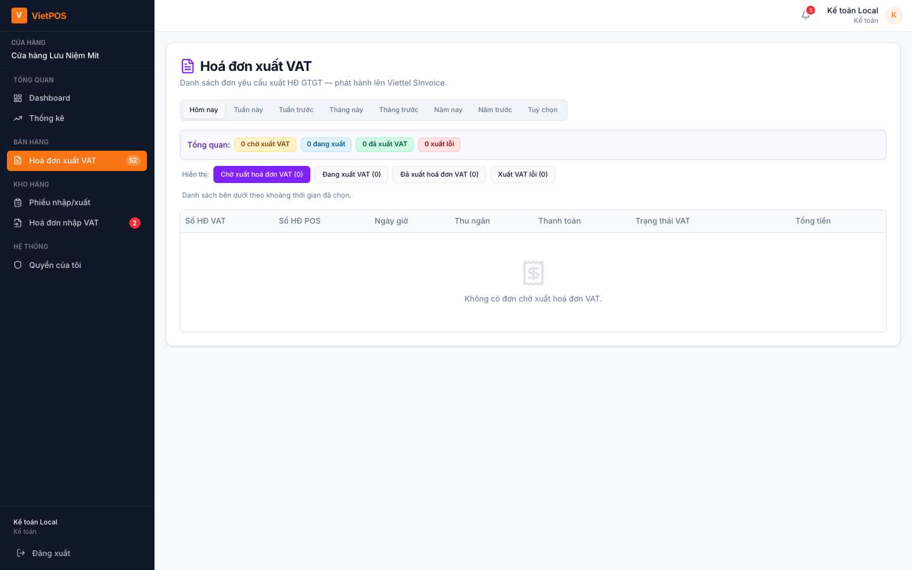
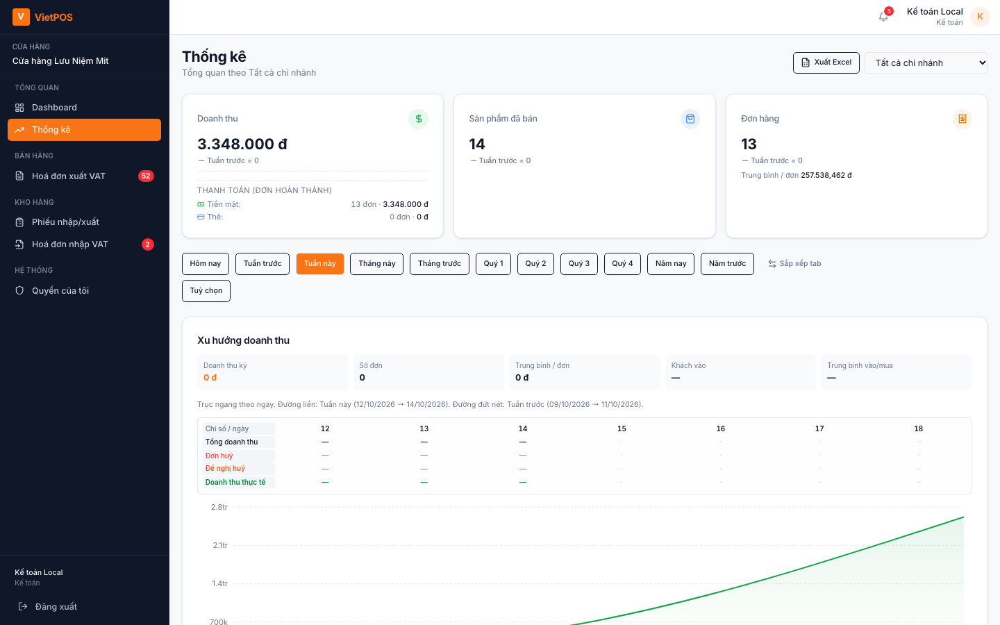
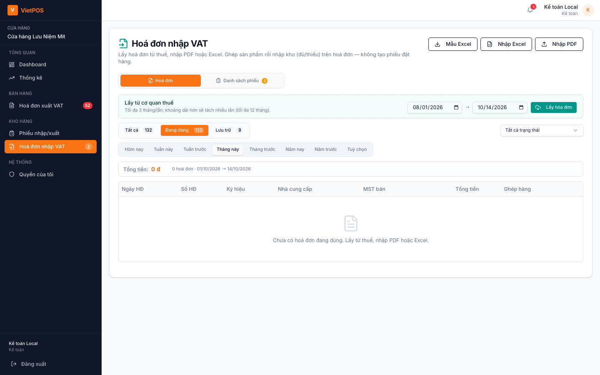
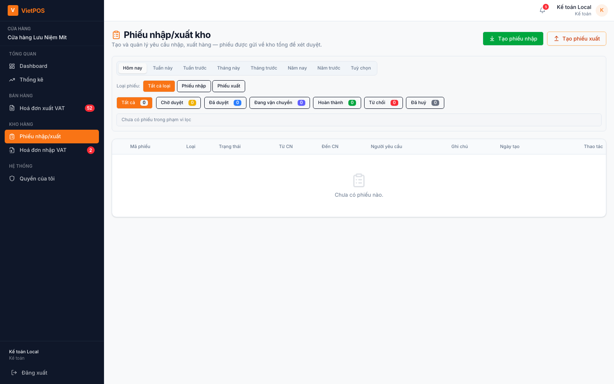
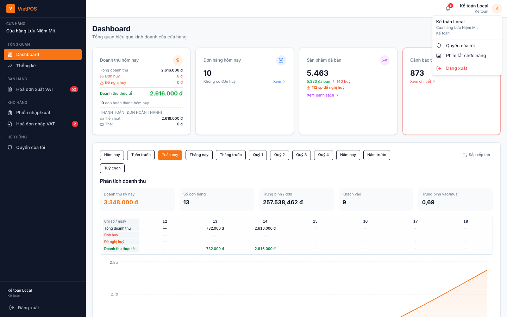

Hướng dẫn sử dụng VietPOS
Dành cho kế toán (accountant)
Kế toán tập trung VAT và số liệu tài chính — không dùng POS, không checkout.
Thường làm việc trên Hoá đơn xuất/nhập VAT, Thống kê (tại chi nhánh chính), và xem Phiếu kho khi cần đối chiếu.
1. Đăng nhập

1b. Mã PIN 4 số
Giống quản lý: PIN sau email/mật khẩu, khóa 5 phút khi sai, quên PIN qua quy trình duyệt (không áp dụng super_admin).

2. Menu kế toán
- Tổng quan: Dashboard; Thống kê (kế toán tại HUB — nếu shop cấu hình)
- Bán hàng: chỉ Hoá đơn xuất VAT — không có POS / Đơn hàng
- Kho hàng: Phiếu nhập/xuất (xem / đối chiếu); tại HUB: Hoá đơn nhập VAT
- Hệ thống: Quyền của tôi
Không có menu Sản phẩm / Tồn kho riêng với vai trò kế toán — dùng báo cáo VAT và thống kê.

2b. Quyền của tôi

3. Dashboard
Xem tổng quan shop; chi tiết VAT → các menu chuyên trách bên dưới.
4. Hoá đơn xuất VAT
Xử lý hàng đợi xuất HĐ GTGT cho đơn đã bán (phối hợp quầy / quản lý). Badge trên menu khi còn đơn chờ.

5. Thống kê (chi nhánh chính)
Kế toán tại HUB có thể mở Thống kê để xem số liệu theo shop (tùy cấu hình chuỗi).

6. Hoá đơn nhập VAT
Trên HUB: đối chiếu hoá đơn mua vào, ghép phiếu nhập — badge cam khi còn phiếu chờ xử lý.

7. Phiếu nhập / xuất
Xem danh sách phiếu để đối chiếu với chứng từ; thao tác duyệt kho thường do quản lý / thủ kho.

8. Sự cố
| Hiện tượng | Gợi ý |
|---|---|
| Không thấy POS | Đúng — kế toán không bán hàng trên POS |
| Không mở Thống kê / VAT nhập | Shop không phải HUB hoặc chưa cấp quyền — liên hệ admin |
| Không đăng nhập | Kiểm tra mạng, PIN; quên PIN → quy trình duyệt |
9. Quy tắc gọn
- Xử lý hàng đợi VAT xuất đúng hạn.
- Đối chiếu VAT nhập với phiếu kho / NCC trước khi chốt.
- Không dùng tài khoản kế toán để bán hàng POS.
